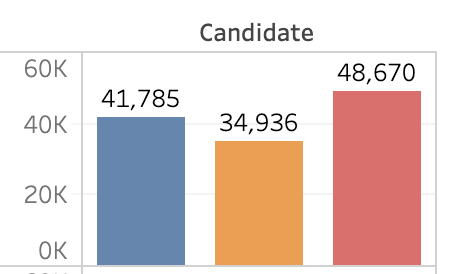
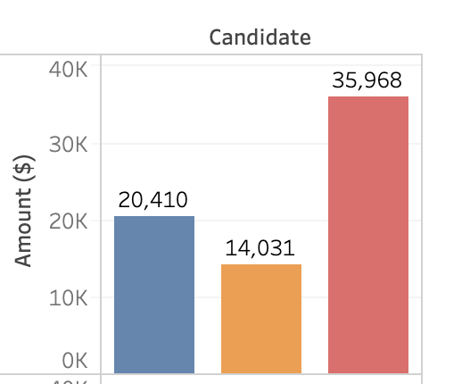

Our goal with this project is to make more information about Portland Mayoral Campaign Finances available to voters. Please see the information page for more info.
We currently have data entered for the July, 2019 candidate filings, but are working on entering the data for September and October filiings. We expect this page to be updated multiple times before the election.
We need typists!
It is an onerous process to type data from the PDFs we have available to
us. Do you have some time to enter data?
Please see
information here
See data visualizations:
|

Candidate contributions by donor type |

Candidate contributions by geographic region |
Data
Data is available at Portland City Hall; we worked primarily from PDFs available from The Portland Press Herald:
- July candidate filings in the Portland Press Herald
- September mayoral candidate filings in the Portland Press Herald
- October mayoral candidate filings in the Portland Press Herald
Additionally, the Snyder campaign provided spreadsheets directly, saving considerable data entry for the OpenMaine team. The Strimling and Thibodeau teams did not respond to requests for spreadsheets.
Please see our information page for more details.
|
|
You can learn more about OpenMaine by going to our website at openmaine.org, and from there, can join us on MeetUp, join our Slack, find our GitHub repo, etc. |